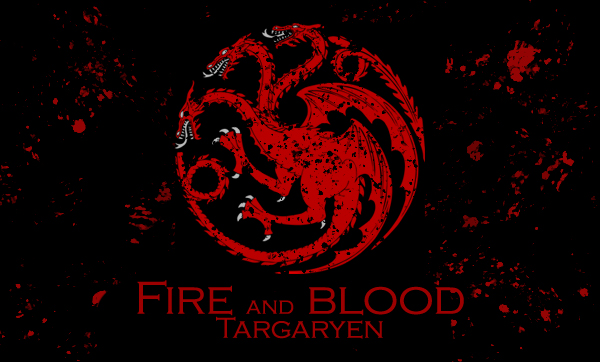
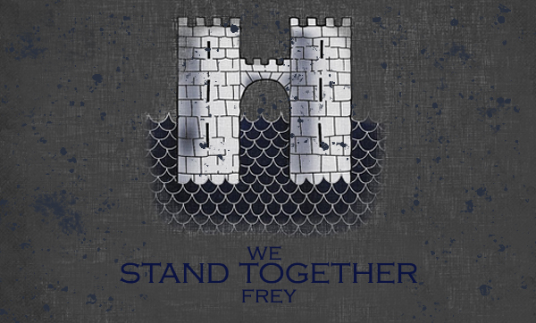
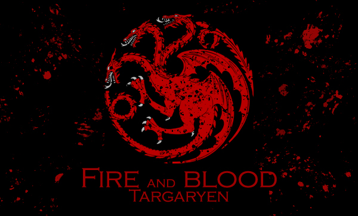
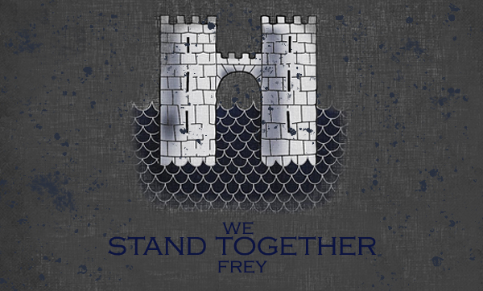

House Stark
House Stark of Winterfell is one of the Great Houses of Westeros and the principal noble house of the north. In days of old they ruled as Kings of Winter, but since Aegon's Conquest they have been Wardens of the North and ruled as Lords of Winterfell.